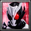

Player profile
teradestroyer13
Rank #6server.eurobattle.netSeason 2
Most played · 【Silver Arbiter】
Matches2814 wins · 14 losses
Win rate50%
Avg K / D / A49.6 / 36.0 / 10.1
Avg APM161
Avg damage dealt292.6k
Avg damage taken166.1k
Heroes played
Explore heroes →| HERO | MATCHES | WIN RATE | AVG K / D / A | AVG DMG |
|---|---|---|---|---|
【Silver Arbiter】Most played | 4 | 75% | 57.0 / 34.5 / 9.2 | 299.2k |
Dante スパーダの息子 | 3 | 33% | 50.7 / 35.3 / 11.3 | 285.7k |
アルトリア・ペンドラゴン | 2 | 100% | 56.0 / 35.5 / 10.0 | 285.8k |
Lucia | 2 | 50% | 62.5 / 36.5 / 8.0 | 381.4k |
V バージルースパーダの息子 | 2 | 0% | 59.5 / 35.5 / 7.5 | 324.1k |
blue KEZYO | 2 | 0% | 43.0 / 38.0 / 9.5 | 202.8k |
 仮面ライダーアークワン | 1 | 100% | 40.0 / 34.0 / 12.0 | 310.1k |
藤原 妹紅 | 1 | 100% | 50.0 / 29.0 / 13.0 | 333.3k |
Future トランクス | 1 | 100% | 40.0 / 39.0 / 12.0 | 230.0k |
The Strongest | 1 | 100% | 36.0 / 29.0 / 15.0 | 227.4k |
Blade | 1 | 100% | 57.0 / 35.0 / 11.0 | 380.8k |
【Joker】 | 1 | 100% | 53.0 / 29.0 / 6.0 | 269.9k |
Puri Puri Prisoner | 1 | 100% | 50.0 / 45.0 / 13.0 | 354.2k |
仮面ライダーエボルブラックホールフォーム | 1 | 0% | 34.0 / 38.0 / 7.0 | 292.8k |
Seha Lee | 1 | 0% | 32.0 / 42.0 / 11.0 | 244.8k |
『Codename 555-SB』 | 1 | 0% | 37.0 / 48.0 / 12.0 | 272.7k |
竈門 炭治郎 | 1 | 0% | 48.0 / 35.0 / 14.0 | 284.0k |
仮面ライダーゲンム | 1 | 0% | 44.0 / 35.0 / 6.0 | 285.6k |
The Last Future of Embryo | 1 | 0% | 47.0 / 34.0 / 9.0 | 264.2k |
Averages use recorded statistics only; unavailable historical values are shown as —.
Recent matches
Open a match for its scoreboard and kill matchups.
WIN75:34
MCB #2000213
07 Nov 2026 · 18:56 WIB
40.0 / 34.0 / 12.0View match →
WIN53:59
MCB #2000211
07 Nov 2026 · 04:25 WIB
50.0 / 29.0 / 13.0View match →
LOSS61:29
MCB #2000210
07 Nov 2026 · 02:00 WIB
58.0 / 42.0 / 5.0View match →
LOSS60:08
MCB #2000208
06 Nov 2026 · 01:55 WIB
60.0 / 33.0 / 6.0View match →
WIN67:10
MCB #2000207
05 Nov 2026 · 23:10 WIB
42.0 / 37.0 / 10.0View match →
LOSS63:42
MCB #2000204
04 Nov 2026 · 21:34 WIB
47.0 / 31.0 / 13.0View match →
WIN61:44
MCB #2000201
04 Nov 2026 · 00:08 WIB
61.0 / 36.0 / 7.0View match →
WIN59:56
MCB #2000199
02 Nov 2026 · 22:14 WIB
48.0 / 38.0 / 15.0View match →
LOSS64:44
MCB #2000189
31 Oct 2026 · 23:02 WIB
42.0 / 38.0 / 12.0View match →
LOSS64:22
MCB #2000187
31 Oct 2026 · 00:33 WIB
34.0 / 38.0 / 7.0View match →